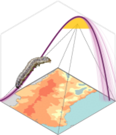

Interactive visualization
Source:vignettes/articles/interactive-maps.Rmd
interactive-maps.RmdIntroduction
In this vignette we demonstrate how to generate interactive maps from the results obtained using the main workflow of the mappestRisk package. The mappestRisk package provides tools to estimate climatic suitability and developmental risk for ectothermic organisms based on temperature-dependent development models. The main workflow produces spatial outputs summarizing the number of months in which environmental conditions allow development.
These results could be returned as a multi-layer raster object containing:
- the mean number of suitable months (risk),
and
- the uncertainty associated with predictions (standard deviation across bootstrap simulations).
While static maps are useful for reporting results, interactive
visualization allows users to explore spatial patterns more dynamically
and intuitively. In this article we demonstrate how to build an
interactive map from the raster output produced by
map_risk() using the leaflet ecosystem in
R.
Obtaining the risk raster
To demostrate how to use the interactiviy we use the main workflow of
the mappestRisk package (see here). The raster object required for the
interactive map is produced by the mappestRisk::map_risk()
function. The typical steps of the mappestRisk workflow include:
- fitting temperature–development models
- propagating uncertainty through bootstrap simulations
- estimating thermal suitability boundaries
- projecting these limits into geographic space
Preparing the layers
- First, we obtained the layers and create several custom palettes.
risk <- risk_rast[["mean"]]
uncertainty <- risk_rast[["sd"]]
risk_colors <- c(
"white",
grDevices::colorRampPalette(
c("#0081a7","#00afb9","#fdfcdc","#fed9b7","#f07167")
)(12)
)
pal_risk <- leaflet::colorNumeric(
palette = risk_colors,
domain = c(0,13),
na.color = "transparent"
)
uncertainty_colors <- as.character(khroma::colour("bilbao")(100))
mm <- terra::minmax(uncertainty)
pal_uncertainty <- leaflet::colorNumeric(
palette = uncertainty_colors,
domain = c(mm[1,1], mm[2,1]),
na.color = "transparent"
)Building the custom interactive map
The interactive map includes several features that improve usability and facilitate data exploration:
Mini map. A small overview map can be added using
leaflet::addMiniMap()(Cheng et al. 2025) to help users orient themselves while navigating the map.Opacity control. The leaflet.opacity package (Becker and LizardTech 2018) provides
leaflet.opacity::addOpacitySlider(), allowing users to interactively adjust the transparency of the raster layer.Pixel value query. With
leafem::addImageQuery()(Appelhans 2025), the value of the raster cell is displayed as the cursor moves over the map, enabling quick inspection of local predictions.
m <- leaflet() |>
addProviderTiles(providers$CartoDB.Positron, group = "Basemap") |>
addProviderTiles(providers$Esri.WorldImagery, group = "Satellite") |>
addRasterImage(
risk,
layerId = "Risk Map",
group = "Risk Map",
colors = pal_risk
) |>
addRasterImage(
uncertainty,
layerId = "Uncertainty",
group = "Uncertainty",
colors = pal_uncertainty
) |>
addMiniMap(toggleDisplay = TRUE) |>
addLayersControl(
position = "bottomright",
baseGroups = c("Satellite", "Basemap"),
overlayGroups = c("Risk Map", "Uncertainty"),
options = layersControlOptions(collapsed = TRUE)
) |>
leafem::addImageQuery(
risk,
project = FALSE,
type = "mousemove",
layerId = "Risk Map",
digits = 2
) |>
leafem::addImageQuery(
uncertainty,
project = FALSE,
type = "mousemove",
layerId = "Uncertainty",
digits = 2
) |>
addLegend(
pal = pal_risk,
values = c(0,3,6,9,12),
title = "Risk Maps<br>(n months)",
group = "Risk Map",
position = "bottomleft",
labFormat = leaflet::labelFormat(digits = 0)
) |>
addLegend(
pal = pal_uncertainty,
values = c(mm[1,1], mm[2,1]),
title = "Uncertainty<br>(n months)",
group = "Uncertainty",
position = "bottomleft"
) |>
hideGroup("Uncertainty")
if (requireNamespace("leaflet.opacity", quietly = TRUE)) {
m <- m |>
leaflet.opacity::addOpacitySlider(layerId = "Risk Map") |>
leaflet.opacity::addOpacitySlider(layerId = "Uncertainty")
}
mExporting the map
Leaflet maps created in R are HTML widgets, which means they can be easily exported as standalone HTML files and shared with others. This allows the interactive map to be opened in any web browser without requiring an R environment.
The function htmlwidgets::saveWidget() (Vaidyanathan et al. 2023) can be used to save
the map as a self-contained HTML file that includes all necessary
dependencies.
outfile <- file.path(tempdir(), "interactive_map.html")
htmlwidgets::saveWidget(
widget = m,
file = outfile,
selfcontained = TRUE
)Summary
Interactive maps provide an effective way to explore and communicate spatial risk estimates produced by mappestRisk.
Combining raster outputs with leaflet allows users to inspect spatial patterns, evaluate uncertainty, and share interactive results easily.